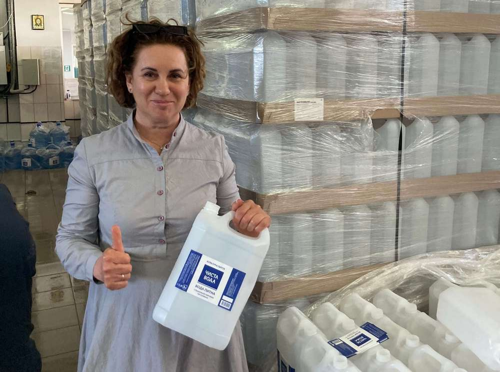
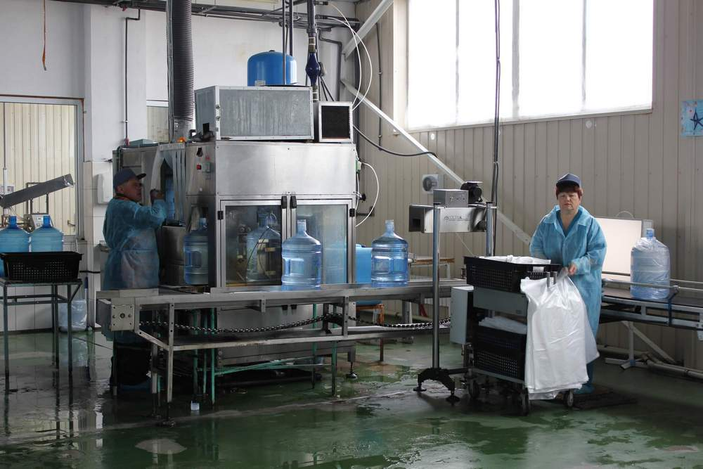

Svitlana Molchanova’s company, Clear Water, a water delivery service in Mykolayiv, has not stopped its work since the
war’s outbreak. Purified
water deliveries continue to supply humanitarian aid distribution centers, the Ukrainian military and city residents. Yet, the company was on
the verge of going out of business at the war’s outset. The EU4Business programme’s micro-grant in the amount of UAH 150,000 (or equivalent
of
EUR 4,000) helped the company stay in business to serve its customers in existential conditions.
In the 1990s, a culture of clean water consumption had not yet developed in Ukraine, and there was no drinking water delivery. Back then, a
newly-independent Ukraine was eager to adopt best international practices and in 1998, the Clear Water brand appeared, the first service for
purified bottled water delivery in the city of Mykolayiv.
The idea originated with the founder of the company, Ms. Molchanova. The first water cylinders were purchased from other Ukrainian cities and
transported in Mykolayiv on a two-wheeled carriage. Now, almost 25 years later, Clear Water is a large enterprise with its own plant,
laboratory
and certified water well.
When the War Comes to Your Home
Until February 24, 2022, the company enjoyed the appreciation of thousands of clients, including the largest businesses in the city. Every
day,
up to 1,000 bottles were delivered in Mykolaiv and Clear Water brand stores could be found in every city neighborhood. The water treatment
plant
capacity allowed production of about 2,000 liters of water per hour.
The full-scale Russian war caught the Clear Water staff by surprise as it did all Ukrainians. Despite threats and danger, the business
continued
to work from the first day of the invasion and stopped only once in early March during the fighting at the Mykolayiv airport because the
Clear
Water plant is located nearby.
During the first two months of the war, the business supplied free water to civilians, hospitals and the Army. When in April Russian
invaders
cut the water supply in the Kherson region which provides for the city of Mykolayiv, the city was left without a water supply. The need
for
drinking water became more critical.
The situation was aggravated when Russians began to attack Ukraine’s oil depots. Fuel shortages and a significant fuel price increase
impacted
water service delivery to refugee hubs and roadblocks. Clear Water, which from the first day of the war was helping others, now needed
support.
So Much Awaited Help

Svitlana Molchanova learned about small businesses micro-grants available from the EU4Business programme and its partners on the
Diia.Business
portal. Without hesitation, she decided to participate in the competition and complete all the necessary application forms. The process
took
just one day.
News on winning in the micro-grant program was like a breath of fresh air for the company at that time when Mykolayiv and all its
inhabitants
experienced a critical water shortage. Financial support for the company could actually save a large number of people.
The decision on how to distribute the grant funds was obvious to company executives: Fuel and revolving water containers were experiencing
a
shortfall. Stocks of bottles and fuel were running out; there was no doubt about what needed to be done.
Micro-grant funding allowed Clear Water to replenish its monthly recyclable container fund by 25 percent through purchasing 190 bottles
and
replenishing its fuel stock by purchasing more than 570 liters of diesel fuel. This allowed the enterprise to continue water delivery
throughout
the city of Mykolaiv, including its surrounding villages.
The micro-grant enabled Clear Water to deliver about 30 tons of purified drinking water during a critical time for the entire Mykolaiv
region.
Keep Calm and Continue to Work

Today the enterprise continues to work and supply Mykolayiv residents with clean water. Since the outbreak of war, the number of orders has
fallen by more than 50 percent; but, after de-occupation of the west bank of the Kherson region, people started returning to Mykolayiv and
sales
volume is now gradually coming back.
Now there are only two city water bottling points. Almost 30 percent of plant workers were mobilized into the Army and there are not enough
people to work in these facilities. And, yet Clear Water continues to help both civilians and the Army. After liberation of the west bank in
the
Kherson region, the Clear Water and a local refugee center team, organized two deliveries of drinking water to Kherson and surrounding
villages
that were most impacted by Russian invaders.
To emphasize its commitment, on the first day of the full-scale Russian war, Clear Water posted a message on its social media pages: “In this
difficult time, we try to keep calm and continue to work.”
And now, for the eleventh month in a row, the company kept its promise and is doing everything to help Ukrainians and Ukraine. We are honored
for the opportunity to help and support such valuable domestic businesses.
Reference information
Micro-grants supporting Ukrainian entrepreneurs became available within the framework of the international cooperation program
“EU4Business: SME
Competitiveness and Internationalisation”, which is funded by the European Union and the German Government and implemented by the German
Federal
Company Deutsche Gesellschaft für Internationale Zusammenarbeit (GIZ) GmbH with the Ministry of Digital Transformation of Ukraine and the
Ministry of Economy of Ukraine, “Diia” portal and the Ukrainian state institution “Entrepreneurship and Export Promotion Office”. The
implementing partner of the micro-grants initiative is the International charitable organization “East Europe Foundation”.
In 2023, the EU4Business programme plans to implement other waves of micro, medium and large grants for Ukrainian entrepreneurs. Follow
the
announcements on the Programme’s page.
Grant contests for cluster associations and city communities are also currently ongoing, applications are accepted until January 27, 2023.